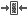

NGCHM Viewer Help
NGCHM Viewer Help
The NGCHM Heat Map Viewer is a dynamic, graphical environment for exploration of clustered or non-clustered heat map data. This help page provides an introduction to the controls and features of the application. For information on building heat maps and additional advanced features of the NGCHM viewer, please see our full documentation.

The NGCHM Heat Map Viewer contains two panels. The Summary Panel on the left provides a full view of your heat map. The Detail Panel on the right provides a zoomed in view of a portion of the heat map. Click anywhere on the summary picture to see the detail of that portion of the map. The green box on the Summary Panel indicates the portion of the heat map currently displayed in the Detail Panel. You may zoom in or out with the mouse scroll wheel or zoom in/out buttons to see smaller or larger portions of the map in the Detail View. When the zoom level permits, row and column labels will be displayed in the Detail Panel. You may also use arrow keys to move up/down/left/right one row in the Detail Panel. The divider bar may be moved by clicking on it and dragging left or right to change the relative size of the Summary and Detail Panels.
We have a video series of short tutorial videos to introduce the various capabilities and controls of the NG-CHM Viewer: Basic NG-CHM Navigation
There are a variety of buttons on the header bar to manipulate the heat map view. Each has a tooltip that can be displayed by hovering over the button for a view seconds with the mouse pointer.
| Control | Description |
|---|---|
 |
Zoom in on the Detail Panel making rows and columns larger. Mouse scroll forward will also zoom in. |
 |
Zoom our on the Detail Panel to show more rows and columns. Mouse scroll backward will also zoom out. |
 |
Set the Detail Panel in normal mode where the data points are square and the number of rows/columns shown will be controlled only by the zoom level. Normal mode contrasts with ribbon view modes. When selected, the background of the button will be darker. |
 |
Set the Detail Panel in ribbon horizontal mode. It is often useful to be able to see the full width of the heat map but also see the row labels. Ribbon horizontal mode shows a horizontal slice of the heat map containing all the columns and a few of the rows. The zoom level will then control how many rows are shown. When selected the button background will be darker. Select the normal mode button to exit ribbon view. |
 |
Set the Detail Panel in ribbon vertical mode. It is sometimes useful to be able to see the full height of the heat map but also see the column labels. Ribbon vertical mode shows a vertical slice of the heat map containing all the rows and a few of the columns. The zoom level will then control how many columns are shown. When selected the button background will be darker. Select the normal mode button to exit ribbon view. |
| Search: | Enter a search term in the search box and hit enter or click the Go button to look for the search term in the heat map labels. The search by default will do partial matches so searching for 'Gene_2' will find Gene_2 and Gene_21. To search for an exact term, place quotes around the search string. Multiple search terms can be entered separated by spaces. The search box will turn yellow if some search terms are not found and will turn red if no search terms are found. Use the -> and <- buttons next to the search box to have the detail view jump to the next or previous row / column that match the search terms. The labels of rows and columns that match the search term will be selected (green background) and '<' with a green background will be placed at the position of matches in the Summary Panel. To clear selections from a search, use the red X button next to the search box. |
 |
This button will split the Summary Panel and Detail Panel into two coordinated browser instances. This is helpful if you are working on a computer with multiple monitors and would like to see the Summary Panel on one screen and Detail Panel on another. |
|  | If you have split the Summary and Detail Panel into two browsers, this will join them back together into a single browser. |
 |
This button opens up a PDF generation window that allows you to generate a PDF document of the heat map. The PDF window allows selection of various options for the generation of the PDF. The detail window in the generated PDF will be in the same position and zoom level as is currently shown in the viewer. |
 |
The save button allows users to save a local copy of a heat map. Changes made through the configuration panel are saved to the local copy of the heat map. Heat maps are stored as a collection of files compressed into a zip file. Local heat map files can be viewed in several ways including a local stand-alone version of NGCHM Heat Map Viewer. Please see our full documentation for details. |
 |
The gear button opens the heat map display properties panel. Many items of the heat map can be configured including heat map colors, label sizes, which covariate bars to display, and data layer breakpoints. Please see our full documentation for details. |
 |
For advanced maps with multiple data layers, this control allows you to toggle between the different data layers. Please see our full documentation for details. |
Rows or columns can be selected through a search or may be selected by clicking on a row or column label. To select multiple labels use shift-click to select a block of labels or control-click to individually select multiple labels. When labels are selected, you can right click on one of them to access a pop-up menu of actions that can be performed on the selected labels. For advanced maps, a variety of context specific link out options may be available.
Drag selection is also possible. On the Detail Panel hold down shift and the left mouse button while dragging the mouse pointer across the rows and columns you wish to select.

For clustered heat maps, It is possible to select rows / columns by clicking on the dendrogram branch of the rows/columns you wish to select.
Selection operations performed on the Summary Panel will not select rows and columns but will select the view shown in the Detail Panel. Use shift and hold down the left mouse button while dragging the mouse pointer across the region that you would like to view in the Summary Panel. The Detail Panel will select the closest matching zoom level for the region you wish to view.
For clustered heat maps, a selection option in the Summary Panel can be used to view a section of the map associated with a dendrogram branch. This feature is particularly useful for investigation of sub-sections of the heat map related class of samples (e.g. subgroup of cancer patients identified by a dendrogram branch). Selecting a dendrogram branch in the Summary Panel will lock the Detail Panel to only portion of the heat map associated with the selected branch of the dendrogram. You can scroll up/down or left/right through dendrogram branch data. This view is essentially a restricted ribbon view. To get out of the sub-dendrogram view, click on the normal mode button.